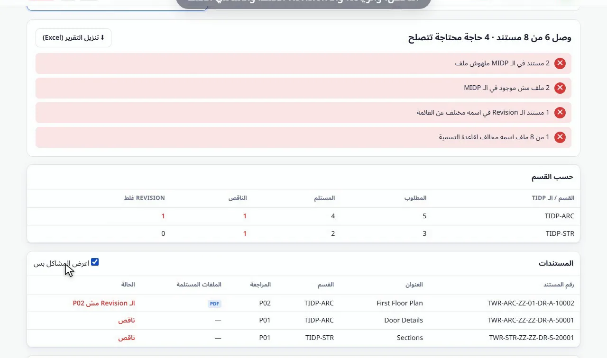

طريقة مراجعة التسليم على الـ MIDP وقاعدة تسمية ISO 19650
قارن كل ملف في التسليم بالـ MIDP والـ TIDP لكل تخصص، وراجع كل اسم ملف على قاعدة تسمية ISO 19650، في تقرير واحد.
ملفاتك بتفضل على جهازك. مفيش أي حاجة بتترفع.
الإجابة باختصار
افتح أداة مراجعة الـ MIDP، وأضف الـ MIDP أو TIDP لكل تخصص (Excel)، وأضف فولدرات التسليم، ودع الأداة تتعلم قاعدة التسمية من الملفات، ثم اضغط "التالي". تحصل على المستندات الناقصة والملفات الزيادة والمراجعات الخطأ والأسماء الخطأ، وتقرير في Excel.
لماذا مراجعة التسليم يدوياً مشكلة
في مشروع يعمل بـ ISO 19650، كل مستند يجب أن يطابق سطراً في الـ MIDP برقم المستند والمراجعة الصحيحين. وقبل قبول التسليم، على مدير المعلومات أن يطابق كل ملف مع القائمة ويراجع كل اسم خانة خانة.
مع عدة تخصصات ومئات الملفات، من السهل أن تفوتك لوحة ناقصة أو موديل بمراجعة خطأ أو اسم فيه خانة واحدة خطأ، فيعود لاحقاً كتسليم مرفوض.
خطوة بخطوة
أضف الـ MIDP أو الـ TIDP
اضغط "إضافة ملف Excel" وأضف الـ MIDP، أو TIDP لكل تخصص. ولكل ملف، اختر العمود الذي فيه رقم المستند. لا يوجد MIDP بعد؟ تخطَّ هذه الخطوة وراجع الأسماء فقط.
أضف فولدرات التسليم
اضغط "إضافة فولدر" واختر فولدر الملفات المستلمة. ويمكنك إضافة فولدر لكل تخصص. ملفات PDF و DWG و RVT و IFC و NWC و DOCX و XLSX كلها محسوبة.
المراجعة في الاسم
إذا كانت أسماء الملفات فيها المراجعة، مثل A-101_P02.pdf، فعّل خيار أن أسماء الملفات فيها المراجعة لتُقارن بالـ MIDP.
حدد قاعدة التسمية
اضغط "اتعلم من الملفات"، أو اكتب اسماً صحيحاً واحداً واضغط "قسّم لخانات". واضبط كل خانة: طولها، وهل هي حروف أو أرقام، والقيم المسموحة.
اقرأ التقرير
اضغط "التالي". يعرض التقرير المستندات الناقصة، والملفات غير الموجودة في الـ MIDP، والمراجعات الخطأ، والأسماء المخالفة للقاعدة، لكل تخصص وملفاً ملفاً. اضغط "تنزيل التقرير (Excel)" لإرساله.

ماذا يعرض التقرير
- مستندات في الـ MIDP لم يُستلم لها ملف.
- ملفات مستلمة غير موجودة في أي خطة.
- ملفات مراجعتها مختلفة عن الـ MIDP.
- أسماء ملفات مخالفة لقاعدة التسمية، مع الخانة الخطأ.
مثال على قاعدة تسمية
أسماء ISO 19650 مكوّنة من خانات بينها فاصل، مثل PRJ-ORG-VOL-LVL-TYP-ROL-NUM، كما في TWR-ARC-ZZ-01-DR-A-10002. تقرأ الأداة كل خانة من الملفات المستلمة، وتعرض القيم التي وجدتها، وتنبّه على أي اسم فيه خانة بطول خطأ أو قيمة غير مسموحة.
راجع التسليم الآن
مجاني، يعمل داخل متصفحك، وملفاتك لا تخرج من جهازك أبداً.
افتح أداة مراجعة الـ MIDP ←أسئلة شائعة
كيف أراجع الملفات على الـ MIDP؟
أضف الـ MIDP أو الـ TIDP في Excel وفولدرات التسليم إلى أداة مراجعة الـ MIDP. يعرض التقرير الناقص والزيادة وما مراجعته خطأ.
هل تراجع أسماء ملفات ISO 19650؟
نعم. تتعلم قاعدة التسمية من الملفات أو من اسم صحيح واحد، وتراجع كل اسم خانة خانة.
هل أحتاج MIDP لاستخدامها؟
لا. تخطَّ الخطوة الأولى فتراجع أسماء الملفات فقط على قاعدة التسمية.
هل تُرفع ملفات المشروع؟
لا. تُقرأ أسماء الملفات فقط، بواسطة متصفحك على جهازك. لا يُرسل أي شيء لأي سيرفر.
ما أنواع الملفات التي تراجعها؟
كلها: اللوحات والموديلات والتقارير والجداول، مثل PDF و DWG و RVT و IFC و NWC و DOCX و XLSX.